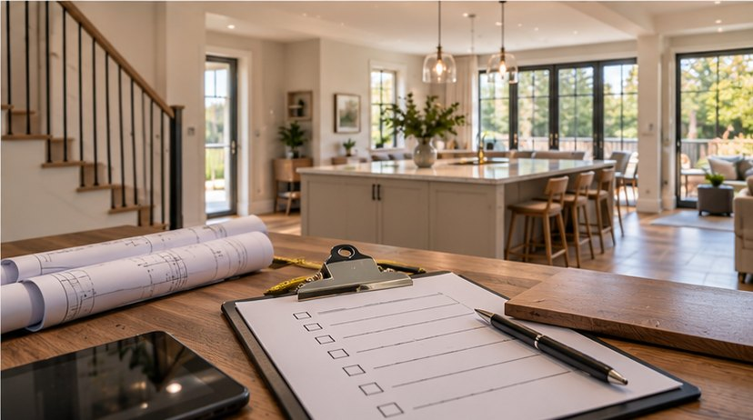

Planning / Renovation Journal
The Renovation Walkthrough Checklist
Prepare for handover with an organized review of the finished work.
Retrospective topic: June 2026 · Oakwaters Journal

A successful the renovation walkthrough checklist project begins with decisions that affect how the home works, not just how it looks. For homeowners in Ontario, the best results come from checking existing conditions, coordinating the relevant trades and making selections before work reaches the point where changes become expensive.
Bring a structured agenda
Walk through each room with drawings, selections and a written list of unresolved decisions. Identify what is included, what is excluded and what remains provisional. Take dated photos before demolition.
Before requesting prices, ask the contractor to explain how this part of the work will be assessed and what assumptions the estimate makes. Request photographs or a sketch when an important condition will be hidden after installation. A clear record helps distinguish an agreed scope from an unforeseen condition.
Inspect the existing conditions
Look for stains, cracks, uneven floors, access panels and ventilation issues. Ask which observations require further investigation. Do not assume a surface blemish reveals the full condition behind it.
Compare at least two realistic approaches using the same criteria: installation requirements, durability, maintenance and impact on adjacent work. A lower material price may not mean a lower installed cost. Ask which decisions must be finalized before products can be ordered.
Confirm dimensions and clearances
Measure furniture, appliance openings, door swings and circulation routes. Check ceiling heights and existing service locations. A walkthrough is the time to catch conflicts before ordering materials.
Walk through the proposed layout at full scale if possible. Tape dimensions on the floor or wall, check the position of existing services and test everyday movement. This simple exercise often reveals conflicts that are difficult to notice in a small drawing.
Review logistics and safety
Discuss site access, protection of finished areas, disposal, parking, pets and utility interruptions. Agree on how neighbours and occupants will be affected. Confirm who will coordinate inspections and subcontractors.
Confirm the sequence with the people doing the work. One trade may need to complete concealed preparation before another can install visible finishes. Record who supplies each item and who checks dimensions, because missing handoffs can cause delays and rework.
Finish with decisions and owners
Create a written action list with a responsible person and deadline for each item. Record allowances and potential change orders separately. A productive walkthrough ends with fewer ambiguities, not just more photographs.
At the final walkthrough, compare the completed work with the approved scope and product specifications. Ask for operating instructions, maintenance guidance and warranty documents where applicable. Photograph finished details and retain invoices and approvals for future reference.
Questions to ask before work begins
- Which existing conditions must be inspected before we commit to the the renovation walkthrough checklist scope?
- Which selections and dimensions must be confirmed before ordering?
- What work is excluded from the estimate, and how will changes be approved?
- Are any municipal permits, inspections or licensed trades required for this specific scope?
- How will completed work be inspected and documented?
A clear written scope, realistic sequencing and decisions made early are more valuable than rushing into demolition. If you are considering a renovation in the Guelph area, Oakwaters Construction can discuss the practical next steps for your home.
Planning a renovation?
Explore what is possible for your home with Oakwaters Construction.
Discuss Your Project → Planning a Primary Suite Renovation
Planning a Primary Suite Renovation Preparing Your Home for an Exterior Upgrade
Preparing Your Home for an Exterior Upgrade